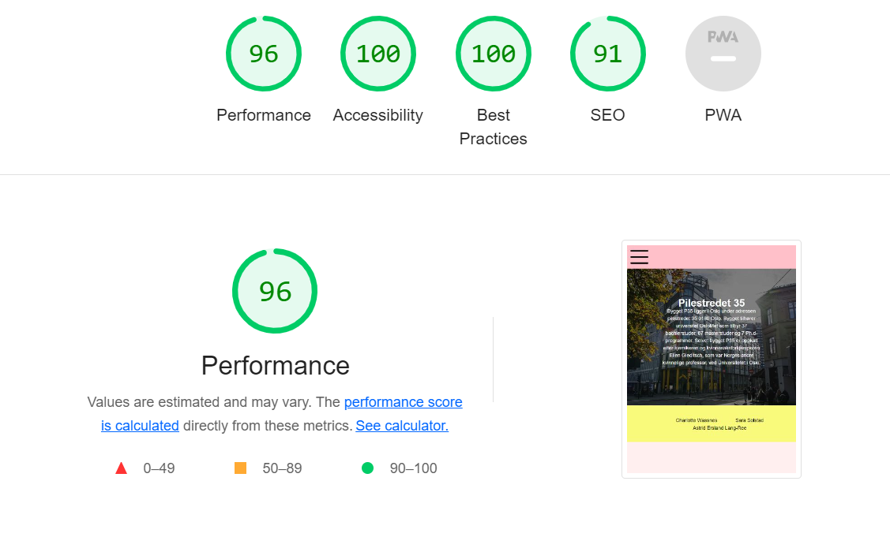
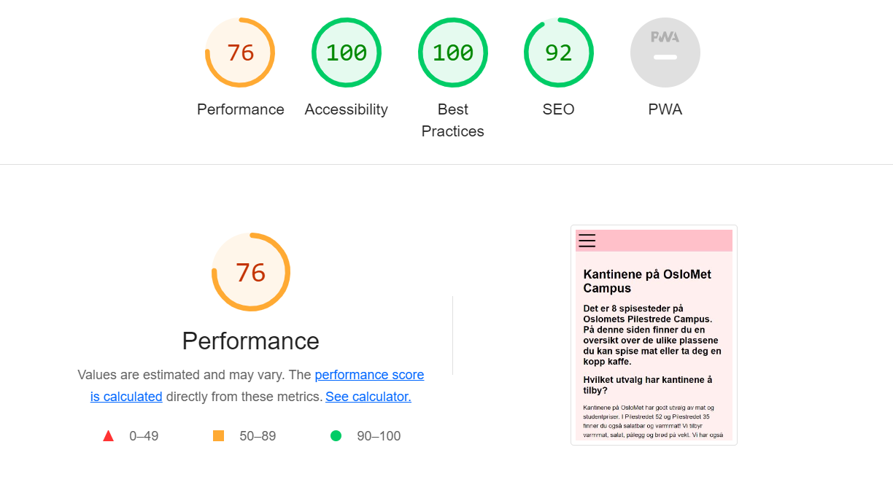
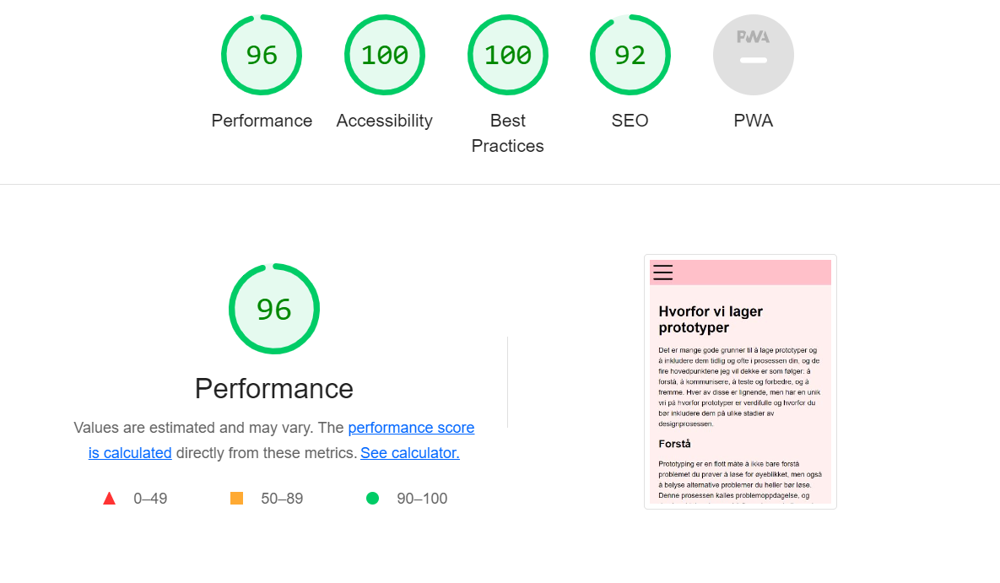

Foto: Test biblotek siden
Foto: Test forsiden
Foto: Test kantine siden
Foto: Test for prototype siden
Vi har testet nettsiden vår med bruk av lighthouse. Dette er en automatisk test, som viser performance, accessebility, best practice og SEO. For å få den mest optimale nettsiden har vi tatt utgangspunkt i tilbakemeldingen fra den automatiske testen, og redigert koden deretter. Vi testet performence på mobil ført, og videre på desktop. Vi fikk 96% på performance på desktop, men problemt med bildestørrelse oppstår på testing av mobil. Bildene vi henviser til er av accessebility fra mobil testing, da det var her vi måtte tilpasse koden for den mest brukervennlige nettsiden.
Bildet til venstre viser tilbakemeldingen fra lighthouse, som ga oss insyn i at vi måtte redigere kontrasten i fargebruk. Vi endret derfor teksten fra hvit til sort i css. Dette ga oss en 100% på accessebility, best practice og SEO. Utenom på perfromance grunnet at bildene var for store, men vi har komprimert alle bildene til under 1MB og anså det derfor ikke som nødvendig å endre.
Her henviser vi til resultatet etter å å ha endret koden slik at vi får den mest optimale nettsiden. Her definerte vi språket, og la til "meta name="viewport" content="width=device-width, initial-scale=1" for å få en mer brukervennlig side, da siden lastes raskere. Vi har også lagt til en Viewport meta tag på de resterende sidene.
Her har vi valgt å fjerne noen bilder etter å tatt i vurdering tilbakemeldingen fra testen, og konkludert med at enkelte bilder ga dårlig utslag og ble uoversiktlig.
Her fikk vi ikke noe utslag på potensielle endringer, og beholdt koden slik den var. Eneste endringer gjort på denne siden er i samhandling med de andre å legge til Viewport meta tag.
Ved å gjennomkjøre en accessebility test har det gitt oss gode innsyn i hvordan vi kan opstimalisere vår nettside og videre utvikle koden vår.Vi har lært til vårt neste webutviklingsproskjekt at vi må ha bedre bildekvalitet og huske bilder under 1MB. Gjennom oppgaven har vi også fått øynene opp for at en nettside vil være anerledes på en pc i motsettning til en mobiltelefon. Det er derfor viktig å teste begge, og videre lage @media for å tilpasse utseende for ulike max-width. Vi ønsker også å ta med oss bruken av kontraster og bilder, slik at teksten kommer tydlig frem. Slik at det ikke vil være vanskelig å se, eller forstå konteksten av bruk av tekst og farge.